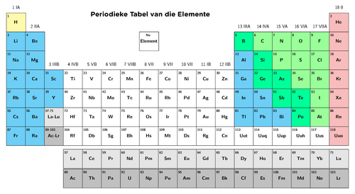
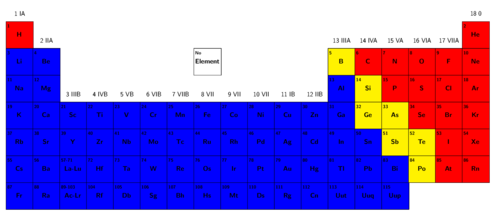

<div class="container matterandmaterials"><div id="contents" class="col-md-12 main-content"><span  class="ch-nr-4"/>
        <div  class="section"><h1 class="title" id="toc-id-0">Die Periodieke Tabel van Elemente</h1><div class="teachers-guide">
<p><strong>Hoofstuk oorsig</strong></p>

<p>2 weke word vir hierdie hoofstuk toegelaat. In hierdie hoofstuk word leerders vir die eerste keer aan die Periodieke Tabel van elemente bekendgestel. Hulle sal leer wat die belangrikste eienskappe van die tabel is en waar die drie kategorie&#235; van elemente - metale, nie-metale en halfmetale (ook metallo&#239;ede genoem) - gevind kan word. Hulle sal ook leer dat elemente volgens hul atoomgetalle in die tabel gerangskik is, beginnende met waterstof (atoomgetal 1) in die boonste linkerhoek en verder van links na regs oor die tabel. Ons sal atoomgetal benader vanuit die oogpunt dat dit die posisie van 'n gegewe element in die Periodieke Tabel <em>aantoon</em>. In werklikheid <em>bepaal</em> (eerder as toon) die atoomgetal die posisie van 'n gegewe element in die tabel.</p>

<p>'n Paar belangrike punte om in hierdie stadium op te let, naamlik:</p>
<ol data-class="ListEnumerated"><li>Die <strong>atoom</strong> word eers in Gr. 8 in KABV bekendgestel, terwyl daar gevoel is dat sekere inligting in verband met die atoom in hierdie stadium uiters belangrik is ten einde atoomgetalle te kan verstaan. Gevolglik is sekere inligting oor die atoom as 'n inleiding ingesluit. Die benadering hier was egter om die Periodieke Tabel te beskou as 'n middel tot die <strong>klassifisering</strong> van die elemente. Ons benader dit op dieselfde wyse as wat wetenskaplikes dit histories gedoen het, naamlik dat hulle ooreenkomste en verskille in elemente <strong>waargeneem</strong> het en hierdie inligting dan gebruik het om die elemente in die tabel te rangskik. Eers later, toe die model van die atoom verder ontwikkel is, was wetenskaplikes in staat om te verklaar <em>waarom</em> elemente wel so in die tabel gerangskik is. Dieselfde <strong>empiriese benadering</strong> is hier gebruik om die 
Periodieke Tabel bekend te stel.</li>
<li>Die betekenis van die term <strong>atoomgetal</strong> (die getal protone in 'n atoom van 'n gegewe element). Dit is omdat die subatomiese partikels protone, neutrone en elektrone eers later bekendgestel sal word (in Gr. 8 Materie en Materiale). Dit is dan wanneer hulle formeel sal leer dat die atoomgetal die aantal protone in 'n atoom aandui. Soos egter in punt 1 hierbo aangedui, het ons tog sekere inligting in verband met die atoom en subatomiese deeltjies hier in Gr. 7 ingesluit.</li>
<li>Die gedetailleerde rangskikking van die swaarder atome aan die onderkant van die tabel word egter nie in hierdie stadium bespreek nie. Dit word as t&#233; ingewikkeld vir leerders in Gr. 7 beskou.</li>
</ol><p/>

<p>4.1 Rangskikking van elemente in die Periodieke Tabel (2 ure)</p>

<p/>
<table><tr><td><p><strong>Take</strong></p></td><td><p><strong>Vaardighede</strong></p></td><td><p><strong>Aanbeveling</strong></p></td></tr><tr><td><p>Aktiwiteit: Vergelyking van Mendeleev se tabel met die moderne weergawe van die Periodieke Tabel</p></td><td><p>Verkryging en weergee van inligting, vergelyking</p></td><td><p>Voorgestel</p></td></tr><tr><td><p>Aktiwiteit: Periodieke Tabel skattejag</p>

                
<p/></td><td><p>Verkryging en weergee van inligting, waarneming</p></td><td><p>Voorgestel</p></td></tr></table><p/>

<p>4.2 Eienskappe van metale, halfmetale en nie-metale (4 ure)</p>

<p/>
<table><tr><td><p><strong>Take</strong></p></td><td><p><strong>Vaardighede</strong></p></td><td><p><strong>Aanbeveling</strong></p></td></tr><tr><td><p>Aktiwiteit: Hoe lyk sommige van die elemente?</p>

                
<p/></td><td><p>Sortering en klassifisering, waarneming, identifisering van elemente en eienskappe, vergelyking</p></td><td><p>Voorgestel</p></td></tr><tr><td><p>Aktiwiteit: Blitshersiening van die eienskappe van metale en nie-metale</p>

                
<p/></td><td><p>Sortering en klassifisering, identifisering van eienskappe, vergelyking</p></td><td><p>Opsionele hersiening (voorgestel)</p></td></tr><tr><td><p>Aktiwiteit: Klassifisering van element X</p>

                
<p/></td><td><p>Verkryging en weergee van inligting, lees, waarneming, identifisering van eienskappe</p></td><td><p>Voorgestel</p></td></tr><tr><td><p>Aktiwiteit: Die gebiede van die Periodieke Tabel</p>

                
<p/></td><td><p>Verkryging en weergee van inligting, sortering en klassifisering, vergelyking</p></td><td><p>KABV voorgestel</p></td></tr><tr><td><p>Aktiwiteit: Gebruike van die elemente</p></td><td><p>Verkryging en weergee van inligting, kommunikasie, groepwerk, maak van 'n plakkaat</p></td><td><p>KABV voorgestel</p></td></tr></table><p/>
</div>
<p/>
<div class="note col-md-10" data-type="keyquestions"><ul data-class="ListBulleted"><li>Wat is 'n element?</li>
<li>Hoe kan ons die elemente in ons w&#234;reld klassifiseer?</li>
<li>Watter tabel help ons om sin te maak van die patrone wat ons waarneem in die chemiese eienskappe van die elemente?</li>
<li>Hoe is elemente in die Periodieke Tabel gerangskik? </li>
<li>Wat s&#234; die posisie van 'n element in die Periodieke Tabel vir ons van sy verwagte eienskappe?</li>
<li>Watter inligting kan ons gebruik om die identiteit van 'n element voor te stel?</li>
<li>Wat is die kenmerkende eienskappe van die<ul data-class="ListBulleted"><li>metale;</li>
<li>nie-metale; en</li>
<li>halfmetale?</li>
</ul></li>
</ul></div>
<p/>
<div class="note col-md-6" data-type="visit">
<p>'n Video om ons bekend te stel aan die elemente en aan die Periodieke Tabel<a data-class="ExternalLink" href="http://bit.ly/16C5ZyC">bit.ly/16C5ZyC</a></p>
</div>
<p/>
<div class="teachers-guide">
<p>Die video in die skakel hierbo is 'n vermaaklike en eenvoudige middel om leerders bekend te stel aan die lesmateriaal van hierdie hoofstuk oor elemente en die Periodieke Tabel. Dit verduidelik kortliks wat 'n element is, stel Dmitri Mendeleev en sy rangskikking van die Periodieke Tabel bekend, en verduidelik ook sommige van die konsepte wat later in die hoofstuk bespreek word.</p>
</div>
<p/>

<p>Die mens het al van die vroegste tye in die wetenskap belanggestel. Die vroe&#235; mens het ontdek hoe om natuurlike ertse te verwerk na metale vir ornamente, wapens en gereedskap. Ten minste 3000 jaar gelede, het die antieke mens reeds balsemvloeistowwe (chemikali&#235;) wat uit plante verkry is, gebruik om die liggame van dooie mense en diere te preserveer!</p>
<figure><figcaption class="caption">'n Antieke Egiptiese mummie wat gebalsem is om dit te preserveer.</figcaption></figure><p/>

<p>Die mens is al vir duisende jare besig om materiale te bestudeer en daarmee te eksperimenteer ten einde materie te verstaan. Wetenskaplikes veral, wou iets verstaan van al die verskillende stowwe waarmee hulle gewerk het.</p>

<p/>

<p>Met verloop van tyd is baie verskillende elemente deur wetenskaplikes oral in die w&#234;reld ontdek. Hierdie elemente maak deel uit van al die materiale om ons. Maar wat word bedoel met die woord element? 'n Element is 'n suiwer stof wat nie verder afgebreek kan word nie. Ons sal in hierdie hoofstuk meer uitvind oor elemente.</p>

<p/>

<p>Met verloop van tyd het ons kennis in verband met die elemente en hul gedrag gegroei en het wetenskaplikes besef dat dit nodig is om hierdie inligting te organiseer. Hulle het begin om patrone en ooreenkomste waar te neem in die wyse waarop sommige groepe elemente optree en het hierdie waarnemings opgeteken. Wetenskaplikes wou 'n manier vind om die elemente volgens hul waargenome eienskappe te <strong>klassifiseer</strong>.</p>

<p/>
<figure><figcaption class="caption">Alchemiste besig om met materiale in hulle laboratorium te eksperimenteer.</figcaption></figure><p/>

<p>Die weergawe van die Periodieke Tabel wat ons vandag gebruik, is eerste deur Dmitri Ivanovich Mendeleev in 1872 voorgestel. Mendeleev was 'n briljante Russiese wetenskaplike. Alhoewel ander wetenskaplikes baie bygedra het tot die ontwerp van die Periodieke Tabel, was Mendeleev die eerste een wat gewys het dat die tabel die bestaan en eienskappe van elemente wat op daardie tydstip nog nie ontdek was nie, kon voorspel.</p>

<p/>
<div class="note col-md-6" data-type="visit">
<p>'n Interessante video wat vertel hoe wetenskaplikes die raaisel van die Periodieke Tabel opgelos het.<a data-class="ExternalLink" href="http://bit.ly/1cMGnSw">bit.ly/1cMGnSw</a></p>
</div>
<p/>
<figure><figcaption class="caption">Dmitri Mendeleev.</figcaption></figure><p/>
<div class="note col-md-6" data-type="visit">
<p>Hierdie video vertel ons ons meer van hoe Dmitri Mendeleev die elemente in die Periodieke Tabel gelys en gerangskik het en waarom dit so 'n belangrike gebeurtenis was in die geskiedenis van die wetenskap soos aan ons bekend is.<a data-class="ExternalLink" href="http://bit.ly/147Ql9f">bit.ly/147Ql9f</a></p>
</div>
<p/>
<div class="teachers-guide">
<p>Mendeleev se oorspronklike tabel maak nie deel uit van dit wat leerders verwag word om te ken nie, maar dit is ingesluit om leerders 'n gevoel te gee van die tempo van wetenskaplike ontdekking. Ten einde leerders bewus te maak daarvan dat watenskaplike ontdekking soms 'n stadige proses kan wees, kan jy die gapings wat duidelik is in Mendeleev se Periodieke Tabel (bv. elemente 44, 68 en 72), uitwys. Hierdie gapings verteenwoordig elemente wat nie toe al bekend was nie, maar sedertdien ontdek is.</p>
</div>
<p/>
<div class="section"><h2 class="title" id="toc-id-1">Rangskikking van elemente in die Periodieke Tabel</h2><div class="teachers-guide">
<p>Hierdie webtuiste bevat 'n interaktiewe weergawe van die Periodieke Tabel. Dit is 'n wonderlike hulpmiddel om van die tendense en inligting wat die Periodieke Tabel bevat, te wys. Hierdie webtuiste kan ook in die latere grade gebruik word wanneer die Periodieke Tabel weer, in meer detail, behandel word. Vir die huidige is dit 'n nuttige onderrighulpmiddel om 'n oorsig te gee<a data-class="ExternalLink" href="http://rsc.li/195tO2e">rsc.li/195tO2e</a>.</p>

<p/>

<p>Nog 'n interessante webtuiste wat hoofsaaklik foto's van die elemente bevat, is <a data-class="ExternalLink" href="http://bit.ly/1euHmVi">bit.ly/1euHmVi</a> Dit is 'n baie nuttige webwerf om aan leerders te illustreer wat elemente in werklikheid is.</p>
</div>
<p/>
<div class="note col-md-6" data-type="newwords"><ul data-class="ListBulleted"><li>element</li>
<li>Periodieke Tabel</li>
<li>simbool (of elementsimbool)</li>
<li>atoomgetal</li>
</ul></div>
<p/>
<div class="note col-md-6" data-type="visit">
<p>'n Toer van die Periodieke Tabel<a data-class="ExternalLink" href="http://bit.ly/147Qzgx">bit.ly/147Qzgx</a></p>
</div><div class="teachers-guide">
<p>Bostaande video sluit 'n bietjie meer oor die geskiedenis van Dmitri Mendeleev in, gee 'n oorsig oor Mendeleev se organisering van die Periodieke Tabel en beweeg dan aan na verhoudings van elemente in die Periodieke Tabel. Net voor die einde van die video, noem die aanbieder die belangrikheid van elektrone (om in 'n ander video bespreek te word). Atome, elektrone en protone is konsepte wat eers in Gr. 8 bespreek word.</p>
</div>
<p/>
<div class="note col-md-6" data-type="takenote">
<p>Ons het in Lewe en Lewende Dinge gekyk na die klassifikasie van lewende organismes in ons w&#234;reld. In Materie en Materiale kyk ons nou na die klassifikasiesisteem vir elemente!</p>
</div>
<p/>

<p>Die Periodieke Tabel is 'n klassifikasiesisteem vir die elemente waaruit die materie en materiale in ons w&#234;reld bestaan. Vandag is daar meer as 100 elemente bekend! Elke element het sy eie naam, simbool, atoomgetal en posisie in die Periodieke Tabel.</p>

<p/>
<div class="section"><h3 class="title" id="toc-id-2">Name van elemente</h3>
<p/>
<div class="note col-md-6" data-type="didyouknow">
<p>Hafnium kry sy naam van die Latynse naam vir Kopenhagen, wat <em>Hafnia</em> is, omdat die element ontdek is deur twee wetenskaplikes wat op daardie tydstip in Kopenhagen gewerk het.</p>
</div>
<p/>

<p>Wat is jou naam? Dit is dalk Thando. Of Dawid. Of Megan. Dalk is jy so gelukkig dat jy die enigste persoon in die klas is met daardie naam. Dalk is jy so gelukkig dat jy die enigste persoon in die w&#234;reld is met daardie naam! Dit sal beteken jou naam is uniek.</p>

<p/>

<p>Elke element het 'n unieke naam. Ons kan aan elke naam dink as 'n unieke 'etiket' wat ons kan gebruik om die element mee te identifiseer. Daar is twee ander unieke etikette wat ons kan gebruik om elemente mee te identifiseer. Hulle is die chemiese simbool en die atoomgetal. Ons sal meer hieroor in die volgende afdeling leer. Elke element het sekere eienskappe van sy eie en ons sal later sien dat elemente met sekere eenderse eienskappe saamgegroepeer kan word.</p>

<p/>
<div class="note col-md-6" data-type="visit">
<p>Daar is TWEE liedjies wat jou kan help om die elemente van die Periodieke Tabel te onthou:<a data-class="ExternalLink" href="http://bit.ly/18d0bLl">bit.ly/18d0bLl</a> en <a data-class="ExternalLink" href="http://bit.ly/11OuoPM">bit.ly/11OuoPM</a>. Watter een is jou gunsteling? Kan jy een (of albei) van hulle leer?</p>
</div>
<p/>
<figure><figcaption class="caption">Die Periodieke Tabel van elemente soos dit vandag lyk. </figcaption></figure><p/>
<div class="note col-md-6" data-type="takenote">
<p>Daar is 'n groter weergawe van die moderne Periodieke Tabel van elemente op die binne-omslag van jou werkboek. Jy kan dit vir maklike verwysing gebruik.</p>
</div>
<p/></div><div class="section"><h3 class="title" id="toc-id-3">Chemiese simbole</h3>
<p/>

<p>As jy 'n wetenskaplike is wat elke dag met elemente werk, kan dit baie langdradig raak om die name uit te skryf. Om die skryf oor elemente makliker te maak, het wetenskaplikes aan elke element 'n kort <strong>simbool</strong> gegee. Om seker te maak dat ons nie deurmekaar raak met verskillende elemente wanneer ons oor hulle skryf nie, moet die simbool vir elke element uniek wees, net soos sy naam uniek is.</p>

<p/>

<p>Die name en simbole van 'n paar gewone elemente word in die volgende tabel getoon.</p>

<p/>
<div class="note col-md-6" data-type="takenote">
<p>Jy moet die name en simbole van hierdie elemente in hierdie die lys ken.</p>
</div>
<p/>
<table><tr><td><p><strong>Element</strong></p></td><td><p><strong>Simbool</strong></p></td><td><p><strong>Element</strong></p></td><td><p><strong>Simbool</strong></p></td></tr><tr><td><p>Aluminium</p></td><td><p>Al</p></td><td><p>Magnesium</p></td><td><p>Mg</p></td></tr><tr><td><p>Broom</p></td><td><p>Br</p></td><td><p>Stikstof</p></td><td><p>N</p></td></tr><tr><td><p>Kalsium</p></td><td><p>Ca</p></td><td><p>Suurstof</p></td><td><p>O</p></td></tr><tr><td><p>Koolstof</p></td><td><p>C</p></td><td><p>Fosfor</p></td><td><p>P</p></td></tr><tr><td><p>Chloor</p></td><td><p>Cl</p></td><td><p>Kalium</p></td><td><p>K</p></td></tr><tr><td><p>Koper</p></td><td><p>Cu</p></td><td><p>Silikon</p></td><td><p>Si</p></td></tr><tr><td><p>Goud</p></td><td><p>Au</p></td><td><p>Silwer</p></td><td><p>Ag</p></td></tr><tr><td><p>Waterstof</p></td><td><p>H</p></td><td><p>Natrium</p></td><td><p>Na</p></td></tr><tr><td><p>Jodium</p></td><td><p>I</p></td><td><p>Swawel</p></td><td><p>S</p></td></tr><tr><td><p>Yster</p></td><td><p>Fe</p></td><td><p>Tin</p></td><td><p>Sn</p></td></tr><tr><td><p>Lood</p></td><td><p>Pb</p></td><td><p>Sink</p></td><td><p>Zn</p></td></tr></table><p/>

<p>Die simbool vir koolstof (Engels: carbon) is C, die simbool vir swawel (sulfur) is S en die simbool vir stikstof (nitrogen) is N. Hierdie simbole verteenwoordig die eerste letter van elke naam in Engels. Hierdie letter is altyd 'n hoofletter.</p>

<p/>

<p>Wat gebeur wanneer die verskillende elemente se Engelse name almal met dieselfde letter begin? Byvoorbeeld: calcium, carbon, chlorine, en copper begin almal met die letter 'C'! Om seker te maak dat hulle almal 'n unieke simbool het, is 'n tweede letter by hulle simbool gevoeg. Hierdie letter is altyd 'n kleinletter (onderkas).</p>

<p/>

<p>Sommige chemiese simbole is van Latynse name afgelei. Na, byvoorbeeld, kom van die Latynse naam <em>natrium</em> en dit is toevallig ook die chemiese naam wat in Afrikaans gebruik word (Engels: sodium). Hierdie simbole is baie lank gelede gekies, toe baie vakke nog in Latyn bestudeer is. Kan jy jou voorstel hoe moeilik dit moes gewees het?!</p>

<p/>

<p>'n Paar eenvoudige re&#235;ls om te onthou wanneer chemiese simbole gebruik word:</p>
<ol data-class="ListEnumerated"><li>Elke element het sy eie, unieke simbool.</li>
<li>Die simbool is gewoonlik (maar nie altyd nie) die eerste een of twee letters van die Engelse naam van die element.</li>
<li>Die eerste letter van die simbool is altyd 'n hoofletter.</li>
<li>As die simbool twee letters het, is die tweede letter altyd 'n kleinletter.</li>
<li>Sommige elemente het simbole wat van hulle Latynse name afgelei is.</li>
</ol><p/>
<div class="note col-md-6" data-type="didyouknow">
<p>Die simbool vir lood (Pb) kom van plumbum, die Latynse woord vir lood. Lood is vir baie jare gebruik om waterpype te maak. Dit is ook waar die Engelse woord 'plumber' (loodgieter) vandaan kom.</p>
</div></div><div class="section"><h3 class="title" id="toc-id-4">Atoomgetalle</h3><div class="teachers-guide">
<p>Hierdie webtuiste bevat 'n interaktiewe verduideliking van die geskiedenis van die Periodieke Tabel en die atoom en verduidelik wat die verband tussen hierdie begrippe is.  Dit bevat meer inligting as wat leerders op hierdie vlak benodig, maar jy kan daardeur lees ter uitbreiding:<a data-class="ExternalLink" href="http://bit.ly/132Nzbh">bit.ly/132Nzbh</a> .</p>

<p/>

<p><strong><u>Belangrike nota:</u></strong> Ons het die atoom hier vlugtig ter sprake gebring (alhoewel dit nie in KABV gespesifiseer is nie), sodat die idee van 'n atoomgetal sin maak en nie net 'n abstrakte getal is nie. Hierdie konsepte sal egter in Gr. 8 verder ondersoek word. Dit is vir nou belangrik  dat die leerders verstaan dat elke element 'n unieke atoomgetal het en dat die Periodieke Tabel van elemente 'n manier is om die elemente te klassifiseer sodat hulle op grond van eenderse eienskappe saamgegroepeer is.</p>

<p/>

<p>Wanneer die <strong>subatomiese partikels</strong> bekendgestel word, kan jy die model van die atoom op die bord teken as jy dit aan die leerders wil wys. Dit is egter nie krities belangrik dat leerders die rangskikking van die subatomiese deeltjies in hierdie stadium begryp nie. Hier is 'n eenvoudige model van die atoom wat jy op die bord kan teken:</p>

<p/>
<figure id="gd-idp4674288"></figure><p>(Hierdie model beeld stikstofatome uit, want daar is 7 protone. Let daarop dat daar eweveel protone en neutrone is. Hulle maak saam die kern van die atoom uit. Protone het 'n positiewe lading, elektrone het 'n negatiewe lading, en neutrone is neutraal. As die getal elektrone gelyk is aan die getal protone, is die atoom neutraal en het dit nie 'n lading nie. Die atoom kan elektrone bykry of verloor, wat aanleiding gee tot 'n lading, en dit word dan 'n ioon genoem.)</p>
</div>
<p/>

<p>As jy na die Periodieke Tabel kyk, sal jy sien dat elke element ook 'n unieke getal het. Dit word die <strong>atoomgetal</strong> genoem. Om mooi te verstaan wat die atoomgetal is, moet ons weet wat 'n <strong>atoom</strong> is. Ons sal in Gr. 8 meer oor atome leer, maar kom ons gaan vir eers kortliks terug na ons geskiedenisles!</p>

<p/>

<p>Onthou jy ons het ges&#234; dat Mendeleev die eerste Periodieke Tabel in 1869 ontwikkel het? Reeds lank voor dit, aan die begin van die 1800's, het 'n man met die naam John Dalton ges&#234; dat alle materie saamgestel is uit baie klein partikels, wat atome genoem word. Hierdie atome wissel in massa en grootte. Onthou jy dat ons ges&#234; het dat 'n element 'n suiwer stof is? Ons kan nou ook s&#234; dat 'n element 'n stof is wat <em>slegs een spesifieke tipe atoom</em> bevat. Die atome van een element verskil van die atome van enige ander element.</p>

<p/>
<div class="note col-md-6" data-type="takenote">
<p>Jy hoef vir eers nie meer oor die atoom in detail te weet nie. Ons sal in Gr. 8 meer daaroor leer.</p>
</div>
<p/>

<p>Alle atome bestaan uit selfs kleiner deeltjies wat ons subatomiese partikels noem. Hierdie is protone, neutrone en elektrone. Al wat jy vir eers moet onthou is dat die protone, elektrone, en neutrone van een element <em>presies dieselfde is</em> as die protone, elektrone, en neutrone van enige ander element. Dit is hul getal en rangskikking wat die elemente verskillend maak.</p>

<p/>

<p>Die atoomgetal van 'n element verwys na <em>hoeveel protone</em> daardie element in sy atome het. Aangesien elke element 'n ander getal protone in sy atome het, het elke element ook 'n unieke atoomgetal.</p>

<p/>

<p>Kyk bietjie na die Periodieke Tabel. Wat is die atoomgetal van waterstof? Hoeveel protone is daar in sy atome? </p><hr/><div class="teachers-guide">
<p>Waterstof het atoomgetal 1 en het dus 1 proton.</p>
</div>
<p/>

<p>Wat is die atoomgetal van koolstof? Hoeveel protone is daar in sy atome? </p><hr/><div class="teachers-guide">
<p>Koolstof se atoomgetal is 6. Dit het 6 protone in sy atome.</p>
</div>
<p/>

<p>Kan jy sien hoe die elemente gerangskik is sodat hulle atoomgetalle toeneem van link na regs oor die Periodieke Tabel? Dit is nie toevallig nie! Toe Mendeleev die Periodieke Tabel begin skep het, het hy die 60 elemente waarvan hy op daardie tydstip geweet het, in volgorde van toenemende massa gerangskik. Hy merk toe dat daar 'n re&#235;lmatige patroon in ander eienskappe van hierdie elemente was. Mendeleev het hulle toe in kolomme en rye gegroepeer volgens hulle eienskappe. Hierdie was fisiese en chemiese eienskappe wat die wetenskaplikes waargeneem het deur baie verskillende eksperimente uit te voer. Dit het gelei tot die rangskikking van die elemente in die Periodieke Tabel.</p>

<p/>
<figure><figcaption class="caption">Mendeleev se Periodieke Tabel van 1872. Die spasies wat met le&#235; strepies gemerk is, verteenwoordig elemente wat Mendeleev vermoed het bestaan, maar wat op daardie tydstip nog nie ontdek is nie, en waarvoor hy toe plekke gelaat het. </figcaption></figure><p/>
<div class="note col-md-6" data-type="takenote">
<p>Wanneer goed 'n re&#235;lmatige, herhalende patroon toon, s&#234; ons dit is<strong>periodies</strong>. Toe die elemente in volgorde van toenemende massa gerangskik is, het Mendeleev 'n patroon in hul eienskappe waargeneem wat hom in staat gestel het om die elemente in rye en kolomme in 'n tabel te rangskik, die <strong>Periodieke</strong> Tabel. Elemente in dieselfde rye en kolomme in die tabel het soortgelyke eienskappe.</p>
</div>
<p/>
<div class="note col-md-6" data-type="visit">
<p>'n Speletjie om die Periodieke Tabel te leer ken<a data-class="ExternalLink" href="http://bit.ly/15QkMHn">bit.ly/15QkMHn</a></p>
</div>
<p/>

<p>Die Periodieke Tabel wat ons vandag gebruik lyk baie meer modern as Mendeleev se oorspronklike weergawe. Jy sal oplet dat daar nie le&#235; blokkies in die moderne weergawe van die tabel is nie. Dit beteken dat al die elemente wat in Mendeleev se leeftyd nog nie ontdek was nie, nou bekend is.</p>

<p/>

<p>In die volgende aktiwiteit sal ons Mendeleev se oorspronklike Periodieke Tabel vergelyk met die weergawe wat ons vandag gebruik. Dit sal help om ons te wys hoe wetenskaplike ontdekking soms 'n stadige proses is.</p>

<p/>
<div class="activity" data-type="Activity"><h1 class="title">Vergelyking van Mendeleev se tabel met die moderne weergawe van die Periodieke Tabel</h1><div class="teachers-guide">
<p>Hierdie is 'n opsionele, uitbreidingsaktiwiteit.</p>
</div>
<p>Toe Mendeleev die eerste keer die elemente volgens hul massa en hul eienskappe gerangskik het, het dit daartoe gelei dat daar 'n paar gapings in die rye was. Maar as 'n goeie wetenskaplike, het Mendeleev dit nie as 'n probleem gesien nie! In plaas daarvan het hy gedink dat dit eenvoudig beteken dat daar elemente was wat toe nog nie ontdek is nie. En hy was reg!</p>

<p/>

<p>Mendeleev het 'n le&#235; strepie en die atoomgetal geplaas om te wys dat hy gedink het daar 'n element is wat daar moes inkom, maar wat toe nog nie ontdek is nie. Kyk mooi na Mendeleev se oorspronklike tabel. Kyk of jy kan vind waar dit in die tabel s&#234; '_ = 44'.</p>

<p/>

<p>Kyk of jy die 2 ander elemente kan vind wat nog nie op daardie tydstip ontdek was nie. Skryf hulle getalle in die spasie hieronder neer. </p><hr/><div class="teachers-guide">
<p>Hulle is 68 en 72.</p>
</div>
<p/>

<p>Kyk nou na die moderne weergawe van die Periodieke Tabel. Kan jy die elemente met hierdie nommers vind? Wat is hulle simbole? Wat is hulle name? Skryf jou antwoorde in die gegewe tabel.</p>

<p/>

<p>As 'n uitbreiding van hierdie aktiwiteit, kan jy die name van hierdie elemente naslaan en navors wanneer hulle ontdek is, en hierdie inligting in die tabel byvoeg.</p>
<div class="teachers-guide">
<p>Hierdie laaste taak kan verdeel word onder groepe van 3 of 6 leerders, wat hul data kan saambring klas toe en daar bymekaar kan voeg. As die datums vir elke element nie presies ooreenstem nie, bied dit 'n geleentheid om die geldigheid van inligting te bespreek. Wanneer is data 'die waarheid'? Kan ons altyd glo wat ons lees? Wanneer is 'n databron betroubaar?</p>
</div>
<p/>
<table><tr><td><p><strong>Nommer van die element</strong></p></td><td><p><strong>Simbool van die element</strong></p></td><td><p><strong>Naam van die element</strong></p></td><td><p><strong>Wanneer is hiedie element ontdek?</strong></p></td></tr><tr><td><p/></td><td><p/></td><td><p/></td><td><p/></td></tr><tr><td><p/></td><td><p/></td><td><p/></td><td><p/></td></tr><tr><td><p/></td><td><p/></td><td><p/></td><td><p/></td></tr></table><p/>
<div class="teachers-guide">
<p/>
<table><tr><td><p><strong>Nommer van die element</strong></p></td><td><p><strong>Simbool van die element</strong></p></td><td><p><strong>Naam van die element</strong></p></td><td><p><strong>Wanneer is hiedie element ontdek?</strong></p></td></tr><tr><td><p>44</p></td><td><p>Ru</p></td><td><p>Rutenium</p></td><td><p>1844</p></td></tr><tr><td><p>68</p></td><td><p>Er</p></td><td><p>Erbium</p></td><td><p>1843</p></td></tr><tr><td><p>72</p></td><td><p>Hf</p></td><td><p>Hafnium</p></td><td><p>1923</p></td></tr></table><p/>
</div>
<p/>
</div>

<p/>

<p>In die volgende aktiwiteit gaan ons ons nuwe kennis van elementsimbole en atoomgetalle gebruik om na 'n baie waardevolle 'skat' te soek. Ons sal die skat vind deur sekere leidrade in verband met die Periodieke Tabel te volg.</p>

<p/>
<div class="activity" data-type="Activity"><h1 class="title">Periodieke Tabel skattejag</h1><div class="teachers-guide">
<p>Hierdie is 'n pretaktiwiteit met die doel om leerders aan te moedig om met die Periodieke Tabel te werk en die name en simbole van die eerste 20 elemente te leer.</p>
</div>
<p/>

<p>Jou taak is om die leidrade te volg om die skat te vind. Die instruksies sal jou help om die naam van die skat in die blokkies hieronder uit te spel.</p>

<p/>
<div class="exercises"><div class="problemset"><div class="entry"><div class="problem">Leidraad 1: Wat is die simbool vir koolstof (atoomgetal 6)? Skryf hierdie simbool in die eerste blokkie hierbo. </div><div class="solution">
<p/><p>C</p>
</div></div><div class="entry"><div class="problem">Leidraad 2: Waterstof is die ligste element. Kan jy dit in die Periodieke Tabel vind? Skryf sy simbool in die tweede blokkie.</div><div class="solution">
<p/><p>Heel eerste element in die Periodieke Tabel (bo links). Die simbool vir waterstof is H.</p>
</div></div><div class="entry"><div class="problem">
<p>Leidraad 3: Watter simbool verteenwoordig die gas wat ons inasem om te kan lewe? Hier is 'n wenk: Dit word verteenwoordig deur atoomgetal 8. Skryf sy simbool in die derde blokkie en gee die naam van die element hieronder. </p><hr/></div><div class="solution">
<p/><p>O (suurstof)</p>
</div></div><div class="entry"><div class="problem">
<p>Leidraad 4: Hierdie element is in die vierde ry en die negende kolom van die Periodieke Tabel. Dit is 'n metaal wat in magnete gebruik word. Skryf sy simbool in die vierde blokkie. Ken jy sy naam? Skryf sy naam hieronder neer. </p><hr/></div><div class="solution">
<p/><p>Co (kobalt)</p>
</div></div><div class="entry"><div class="problem">
<p>Leidraad 5: Hierdie element word deur atoomgetal 57 verteenwoordig. Skryf sy simbool in die vyfde blokkie. Kyk of jy kan uitvind wat die naam van hierdie element is en skryf dit hieronder neer. </p><hr/></div><div class="solution">
<p/><p>La (lantaan)</p>
</div></div><div class="entry"><div class="problem">
<p>Leidraad 6: Hierdie element word deur atoomgetal 52 verteenwoordig. Dit is 'n halfmetaal wat in die vervaardiging van sonpanele gebruik word. Skryf sy simbool in die laaste (sesde) blokkie. Kyk of jy die naam van hierdie element kan uitvind en skryf dit hieronder neer. </p><hr/></div><div class="solution">
<p/><p>Te (telluur)</p>
</div></div><div class="entry"><div class="problem">
<p>Wat is die 'skat' wat jy gevind het? </p><hr/></div><div class="solution">
<p/><p>Chocolate (sjokolade)</p>
</div></div></div></div>

<p/>
<table><tr><td><p/></td><td><p/></td><td><p/></td><td><p/></td><td><p/></td><td><p/></td></tr></table><div class="teachers-guide">
<p/>
<table><tr><td><p>C</p></td><td><p>H</p></td><td><p>O</p></td><td><p>Co</p></td><td><p>La</p></td><td><p>Te</p></td></tr></table><p>Dit is belangrik om die leerders daarop te wys dat dit nie 'n 'formule' vir sjokolade is nie, maar net 'n pretaktiwiteit is wat gemik is daarop om elemente in die Periodieke Tabel te vind. Ons sal later leer hoe om elementsimbole bymekaar te voeg in formules wat werklike verbindings voorstel.</p>
</div>
<p/>

<p>Voltooi die volgende sin deur die name van die elemente met chemiese simbole te vervang. Jy sal sommige van die simbole moet opsoek! </p><hr/><hr/><p/>

<p>WETENSKAP...Fluoor Arseen Silikon Neon Erbium... MY!</p>
<div class="teachers-guide">
<p>Wetenskap... FAsSiNeEr (fassineer)... my!</p>
</div>
<p/>

<p>Voltooi die volgende tabel om te sien hoeveel name en simbole van die elemente jy onthou. Probeer om dit te doen sonder om na die Periodieke Tabel te kyk.</p>

<p/>
<table><tr><td><p><strong>Element</strong></p></td><td><p><strong>Simbool</strong></p></td><td><p><strong>Element</strong></p></td><td><p><strong>Simbool</strong></p></td></tr><tr><td><p/></td><td><p>Al</p></td><td><p/></td><td><p>Mg</p></td></tr><tr><td><p>Broom</p></td><td><p/></td><td><p/></td><td><p>N</p></td></tr><tr><td><p>Kalsium</p></td><td><p/></td><td><p>Suurstof</p></td><td><p/></td></tr><tr><td><p/></td><td><p>C</p></td><td><p>Fosfor</p></td><td><p/></td></tr><tr><td><p/></td><td><p>Cl</p></td><td><p/></td><td><p>K</p></td></tr><tr><td><p>Koper</p></td><td><p/></td><td><p/></td><td><p>Si</p></td></tr><tr><td><p/></td><td><p>Au</p></td><td><p>Silwer</p></td><td><p/></td></tr><tr><td><p/></td><td><p>H</p></td><td><p/></td><td><p>Na</p></td></tr><tr><td><p>Jodium</p></td><td><p/></td><td><p>Swawel</p></td><td><p/></td></tr><tr><td><p/></td><td><p>Fe</p></td><td><p>Tin</p></td><td><p/></td></tr><tr><td><p>Lood</p></td><td><p/></td><td><p/></td><td><p>Zn</p></td></tr></table><p/>
<div class="teachers-guide">
<p/>
<table><tr><td><p><strong>Element</strong></p></td><td><p><strong>Simbool</strong></p></td><td><p><strong>Element</strong></p></td><td><p><strong>Simbool</strong></p></td></tr><tr><td><p>Aluminium</p></td><td><p>Al</p></td><td><p>Magnesium</p></td><td><p>Mg</p></td></tr><tr><td><p>Broom</p></td><td><p>Br</p></td><td><p>Stikstof</p></td><td><p>N</p></td></tr><tr><td><p>Kalsium</p></td><td><p>Ca</p></td><td><p>Suurstof</p></td><td><p>O</p></td></tr><tr><td><p>Koolstof</p></td><td><p>C</p></td><td><p>Fosfor</p></td><td><p>P</p></td></tr><tr><td><p>Chloor</p></td><td><p>Cl</p></td><td><p>Kalium</p></td><td><p>K</p></td></tr><tr><td><p>Koper</p></td><td><p>Cu</p></td><td><p>Silikon</p></td><td><p>Si</p></td></tr><tr><td><p>Goud</p></td><td><p>Au</p></td><td><p>Silwer</p></td><td><p>Ag</p></td></tr><tr><td><p>Waterstof</p></td><td><p>H</p></td><td><p>Natrium</p></td><td><p>Na</p></td></tr><tr><td><p>Jodium</p></td><td><p>I</p></td><td><p>Swawel</p></td><td><p>S</p></td></tr><tr><td><p>Yster</p></td><td><p>Fe</p></td><td><p>Tin</p></td><td><p>Sn</p></td></tr><tr><td><p>Lood</p></td><td><p>Pb</p></td><td><p>Sink</p></td><td><p>Zn</p></td></tr></table><p/>
</div>
<p/>
</div>

<p/>
<div class="note col-md-6" data-type="didyouknow">
<p>Die Periodieke Tabel bestaan uit 103 elemente, maar slegs 90 van die elemente kom in die natuur voor. Die res is deur die mens gemaak.</p>
</div></div></div><div class="section"><h2 class="title" id="toc-id-5">Eienskappe van metale, halfmetale en nie-metale</h2>
<p/>

<div class="note col-md-6" data-type="newwords">
<ul data-class="ListBulleted"><li>halfmetale</li>
<li>halfgeleier</li>
</ul>
</div>

<p>Die Periodieke Tabel is 'n ongelooflike hulpmiddel! Het jy geweet dat die posisie van 'n element in die Periodieke Tabel vir 'n wetenskaplike kan s&#234; watter eienskappe die element na verwagting sal h&#234;? Dit is omdat die elemente nie sommer willekeurig gerangskik is nie! Hulle is eerder volgens eenderse eienskappe gegroepeer en gerangskik. Kom ons vind uit wat dit beteken.</p>

<p/>
<div class="activity" data-type="Activity"><h1 class="title">Hoe lyk sommige van die elemente?</h1><div class="teachers-guide">
<p>Ons stel voor dat hierdie aktiwiteit gedoen word wanneer jy begin om na die rangskikking van elemente as metale, nie-metale en halfmetale in die Periodieke Tabel te kyk. Hierdie tipe aktiwiteit is in hierdie stadium vir leerders belangrik sodat hulle kan vertaan dat elemente werklike stowwe is wat hulle kan sien. Leerders sukkel dikwels om die konsep te verstaan dat elemente stowwe in die w&#234;reld om ons is wat ons kan sien.</p>

<p/>

<p><strong>Instruksies om hierdie aktiwiteit te doen:</strong></p>
<ol data-class="ListEnumerated"><li>Versamel werklike monsters van die elemente in hierdie aktiwiteit indien moontlik. Jy benodig nie al die elemente nie, maar ten minste sommige van di&#233; wat in die aktiwiteit se lysie is. Jy kan materiale gebruik wat jy in jou omgewing vind, soos 'n stuk steenkool of grafiet (vir koolstof), 'n stuk koperpyp, 'n buisie met swawel, 'n bottel jodiumoplossing van die apteek, 'n stuk aluminiumfoelie, 'n yster-/staalspyker, ens. </li>
<li>As jy jou monsters versamel het, verkieslik in klein houers, kan jy hulle voor op die tafel rangskik.</li>
<li>Plak nou 'n le&#235; Periodieke Tabel van karton in die klas op. Jy sal dit self moet maak. Jy kan die tabel op 'n groot stuk karton teken, of een op 'n groot stuk papier uitdruk. Daar is baie verskillende webtuistes waarvan jy le&#235; Periodieke Tabelle kan aflaai, soos hierdie een: <a data-class="ExternalLink" href="http://bit.ly/132NDb7">bit.ly/132NDb7</a>. 'n Le&#235; Periodieke Tabel word ook in die werkboek verskaf waarin leerders die simbole van die elemente wat jy bespreek, kan invul as jy nie monsters kon bymekaarmaak of 'n groot karton-uitdruk kon maak nie. Hulle kan dit nog steeds doen, selfs al het jy die uitdruk voor in die klas.</li>
<li>Gaan vervolgens deur die elemente wat jy het. Stuur die monster deur die klas, of laat die leerders na jou lessenaar kom om daarna te kyk. </li>
<li>Vra 'n vrywilliger uit die klas om 'n element te kom uitsoek en sy plek in die Periodieke Tabel te vind deur na die een in hul werkboeke te kyk. Hulle moet die monster dan in die korrekte blokkie op die le&#235; kartontabel plak. Gebruik kleeflint of Prestik. </li>
<li>Doen dit vir soveel monsters as wat jy het. Jy kan ook 'n paar gekleurde foto's van verskillende elemente uitdruk om nog meer te doen. Hier is 'n webtuiste waarvan jy kopievrye foto's van die elemente kan aflaai en uitdruk: <a data-class="ExternalLink" href="http://bit.ly/19PEEw3">bit.ly/19PEEw3</a>.</li>
<li>As jy nie regte monsters of kleurfoto's het nie, kan jy verwys na sekere foto's wat in die werkboeke verskaf word, en dan net die simbole op die kartontabel skryf.</li>
<li>Wanneer jy dit vir al jou monsters gedoen het, vra jou leerders om te beskryf hoe die elemente aan die linkerkant van die tabel lyk, en hoe di&#233; aan die regterkant lyk. Dit is die inleiding tot metale en nie-metale. Hulle behoort te kan sien dat di&#233; aan die linkerkant oor die algemeen blink en metaalagtig is (omdat hulle metale is), en di&#233; aan die regterkant gewoonlik in poeiervorm, bros, dof, kleurvol, ens is (omdat hulle nie-metale is). </li>
<li>Leerders moet dan die vrae aan die einde van die aktiwiteit beantwoord.</li>
</ol><p/>
</div>
<p/>

<p><strong>INSTRUKSIES:</strong></p>
<ol data-class="ListEnumerated"><li>Jou onderwyser sal jou deur hierdie aktiwiteit lei. Jy sal &#243;f na werklike monsters van sommige van die elemente kyk, &#243;f na die onderstaande foto's van sommige van die elemente. </li>
<li>Die klas se taak is om die verskillende elemente te identifiseer en hul plekke in die Periodieke Tabel te vind. Jy sal &#243;f die werklike monsters op 'n groot le&#235; Periodieke Tabel plak, &#243;f die le&#235; een hier in jou werkboek gebruik, &#243;f albei.</li>
<li>Jy moet dan kyk hoe die verskillende elemente lyk en kyk of jy enige ooreenstemmende eienskappe kan identifiseer. Die vrae aan die einde sal jou help om daarby uit te kom. </li>
</ol><p/>

<p><strong>Hier is 'n paar foto's van die verskillende elemente:</strong></p>
<figure><figcaption class="caption">Aluminiumfoelie.<a href="http://images-of-elements.com/aluminium.php"> http://images-of-elements.com/aluminium.php </a></figcaption></figure><figure><figcaption class="caption">Koolstof (grafiet).<a href="http://images-of-elements.com/carbon.php"> http://images-of-elements.com/carbon.php </a></figcaption></figure><figure><figcaption class="caption">Koper.<a href="http://images-of-elements.com/copper.php"> http://images-of-elements.com/copper.php </a></figcaption></figure><figure><figcaption class="caption">Magnesium.</figcaption></figure><figure><figcaption class="caption">Swawel.</figcaption></figure><figure><figcaption class="caption">Broom in 'n buisie.<a href="http://images-of-elements.com/bromine.php"> http://images-of-elements.com/bromine.php </a></figcaption></figure><figure><figcaption class="caption">Chloorgas.</figcaption></figure><figure><figcaption class="caption">Kalsium.</figcaption></figure><figure><figcaption class="caption">Fosfor.<a href="http://commons.wikimedia.org/wiki/File:Phosphor.JPG"> http://commons.wikimedia.org/wiki/File:Phosphor.JPG </a></figcaption></figure><figure><figcaption class="caption">Kalium.<a href="http://commons.wikimedia.org/wiki/File:Potassium.JPG"> http://commons.wikimedia.org/wiki/File:Potassium.JPG </a></figcaption></figure><figure><figcaption class="caption">Stikstofgas.<a href="http://images-of-elements.com/nitrogen.php"> http://images-of-elements.com/nitrogen.php </a></figcaption></figure><figure><figcaption class="caption">Yster.<a href="http://images-of-elements.com/iron.php"> http://images-of-elements.com/iron.php </a></figcaption></figure><p/>

<p>As julle nie 'n groot Periodieke Tabel van karton voor in die klas het om mee te werk nie, vul die name van die elemente wat julle bespreek in die le&#235; tabel wat hier voorsien word, in:</p>
<figure id="gd-idp7606752"></figure><p/>

<p>Na voltooiing van hierdie aktiwiteit, hetsy deur werklike monsters op 'n kartontabel te plak, of deur na die foto's hier in jou werkboek te kyk, en te sien waar hulle plekke in die Periodieke Tabel is, moet die volgende vrae beantwoord word.</p>

<p/>

<p><strong>VRAE:</strong></p>
<div class="teachers-guide">
<p>Hierdie vrae moet ook in die klas bespreek word. Die doel is dat leerders insien dat daar 'n verskil is tussen die elemente aan die linkerkant (en middel) en di&#233; aan die regterkant van die Periodieke Tabel. In latere grade sal die konsepte van periodisiteit en patrone wat in die Periodieke Tabel duidelik blyk in die chemiese en fisiese eienskappe van die elemente, in heelwat meer detail ondersoek word. Die klem val vir eers op die belangrikste verskille tussen metale en nie-metale, en dan ook halfmetale.</p>
</div><div class="exercises"><div class="problemset"><div class="entry"><div class="problem">
<p>Hoe sou jy die elemente beskryf wat hoofsaaklik aan die linkerkant van die Periodieke Tabel voorkom? </p><hr/><hr/></div><div class="solution">
<p/><p>Leerders behoort hier op te let dat hierdie elemente meestal soos metale lyk. Hulle het al in vorige grade na metale gekyk en behoort dus vertroud te wees met die eienskappe van metale. Hulle is meestal blink en hard. Leerders sou ook die toestand van hierdie elemente kon waarneem, naamlik dat hulle by kamertemperatuur vaste stowwe is.</p>
</div></div><div class="entry"><div class="problem">
<p>Hoe sou jy die elemente beskryf wat hoofsaaklik aan die regterkant van die Periodieke Tabel voorkom? </p><hr/><hr/></div><div class="solution">
<p/><p>Leerders behoort op te let dat hierdie elemente opmerklik anders lyk as die metale aan die linkerkant en middel van die Periodieke Tabel. Hulle is nie blink en metaalagtig nie, maar eerder dof of gekleurd. Indien jy werklike monsters kan gebruik, sal leerders ook kon oplet dat hierdie elemente nie so hard en duursaam soos die metale is nie, en jy kan byvoorbeeld aan die leerders wys dat die grafiet bros is, of jy kan hulle die verskillende poeiervorme van hierdie elemente wys. Leerders behoort ook te kan sien dat hierdie elemente nie almal vaste stowwe is nie, maar dat sommige vloeistowwe en ook gasse is.</p>
</div></div></div></div>

<p/>
</div>

<p/>

<p>Jy kon waarskynlik van die laaste aktiwiteit aflei dat daar 'n verskil tussen die elemente aan die linker- en regterkante van die Periodieke Tabel is. Kon jy identifiseer wat die klassifikasie van hierdie elemente is? Jy het al in vorige grade van hulle geleer. Hulle is <strong>metale</strong> en <strong>nie-metale</strong>.</p>

<p/>

<p>Kom ons hersien gou dit wat ons reeds in vorige grade geleer het van metale en nie-metale.</p>

<p/>
<div class="note col-md-6" data-type="didyouknow">
<p>Fransium (Fr) is die skaarsste element op Aarde. Slegs 20 tot 30 g bestaan op enige gegewe tyd op die Aarde in die natuur!</p>
</div><div class="section"><h3 class="title" id="toc-id-6">Die eienskappe van metale en nie-metale</h3>
<p/>

<p>Metale en nie-metale het afsonderlike eienskappe. Dit beteken dat hul eienskappe uniek en verskillend van mekaar is. Kan jy onthou wat die unieke eienskappe van metale en nie-metale is? Die volgende aktiwiteit sal jou geheue verfris.</p>

<p/>
<div class="activity" data-type="Activity"><h1 class="title">Blitshersiening van die eienskappe van metale en nie-metale</h1>
<p/>

<p>Hier onder is 'n blok met verskillende eienskappe van metale en nie-metale. Hulle is geskommel en nie gesorteer nie. Jy moet besluit of hierdie eienskappe metale of nie-metale beskryf en hulle in die kolomme in die tabel wat verskaf is, sorteer. Maak seker dat al die eienskappe in die blok ook in jou tabel is. As jy aan eienskappe kan dink wat nie in die blok gelys is nie, kan jy hulle ook in die tabel byvoeg.</p>

<p/>
<table><tr><td><p><strong>Eienskappe</strong></p>

                    <ul data-class="ListBulleted"><li>blink</li>
<li>glansend</li>
<li>dof</li>
<li>bros</li>
<li>smeebaar</li>
<li>rekbaar</li>
<li>gelei elektrisiteit</li>
<li>gelei hitte</li>
<li>gewoonlik 'n vaste stof</li>
<li>kan vaste stof/vloeistof/gas wees</li>
<li>elektriese isolator</li>
<li>termiese isolator</li>
<li>(ander)</li>
</ul></td></tr></table><p/>

<p>Doen die aktiwiteit so vinnig (maar ook so netjies) as wat jy kan, en meet hoe lank jy neem!</p>

<p/>
<table><tr><td><p><strong>Eienskappe van metale</strong></p></td><td><p><strong>Eienskappe van nie-metale</strong></p></td></tr><tr><td><p/></td><td><p/></td></tr></table><div class="teachers-guide">
<p/>
<table><tr><td><p><strong>Eienskappe van metale</strong></p></td><td><p><strong>Eienskappe van nie-metale</strong></p></td></tr><tr><td><p>blink</p>

                    
<p>glansend</p>

                    
<p>smeebaar</p>

                    
<p>rekbaar</p>

                    
<p>gelei elektrisiteit</p>

                    
<p>gelei hitte</p>

                    
<p>gewoonlik 'n vaste stof</p></td><td><p>dof</p>

                    
<p>bros</p>

                    
<p>kan vaste stof/vloeistof/gas wees</p>

                    
<p>elektriese isolator</p>

                    
<p>termiese isolator</p></td></tr></table><p/>
</div>
<p>Die meeste elemente val in een van hierdie twee kategori&#235;: metale en nie-metale. Ons gebruik die <em>eienskappe</em> van 'n element om dit as 'n metaal of nie-metaal te klassifiseer.</p>

<p/>

<p>Dink aan chroom, byvoorbeeld, wat blink (glansend) en buigbaar (smeebaar) is, en hitte en elektrisiteit goed gelei.</p>
<figure><figcaption class="caption">'n Stukkie chroom.<a href="http://commons.wikimedia.org/wiki/File:Chromium.jpg"> http://commons.wikimedia.org/wiki/File:Chromium.jpg </a></figcaption></figure><p/>
<div class="exercises"><div class="problemset"><div class="entry"><div class="problem">
<p>Wat is die eienskappe van chroom? </p><hr/><hr/></div><div class="solution">
<p/><p>Chroom is blink, smeebaar, en gelei hitte en elektrisiteit.</p>
</div></div><div class="entry"><div class="problem">
<p>Sou jy chroom op grond van hierdie eienskappe klassifiseer as 'n metaal of 'n nie-metaal? </p><hr/></div><div class="solution">
<p/><p>Chroom is 'n metaal.</p>
</div></div><div class="entry"><div class="problem">
<p>Kan jy chroom in die Periodieke Tabel vind? (Wenk: Dit mag help om eers sy simbool te vind.) Wat is sy atoomgetal? </p><hr/></div><div class="solution">
<p/><p>24</p>
</div></div></div></div>

<p/>

<p>Dink nou aan swawel. Swawel is gewoonlik 'n dowwe, geel poeier. Dit gelei nie elektrisiteit of hitte  goed nie en groot kristalle van swawel breek maklik as jy hulle laat val.</p>

<p/>
<figure><figcaption class="caption">Swawelkristalle wat aan 'n rotswand in 'n vulkaan vorm. </figcaption></figure><p/>
<div class="exercises"><div class="problemset"><div class="entry"><div class="problem">
<p>Wat is die eienskappe van swawel? </p><hr/><hr/></div><div class="solution">
<p/><p>Swawel is dof, bros, en gelei nie elektrisiteit of hitte goed nie.</p>
</div></div><div class="entry"><div class="problem">
<p>Sou jy swawel op grond van hierdie eienskappe as 'n metaal of nie-metaal klassifiseer? </p><hr/></div><div class="solution">
<p/><p>Swawel is 'n nie-metaal.</p>
</div></div><div class="entry"><div class="problem">
<p>Kan jy swawel in die Periodieke Tabel vind? (Wenk: Dit mag help om eers sy simbool te vind.) Wat is sy atoomgetal? </p><hr/></div><div class="solution">
<p/><p>14</p>
</div></div></div></div>

<p/>
</div>

<p/>

<p>Ons het nou na die eienskappe van metale en nie-metale gekyk. Maar toe wetenskaplikes hulle eksperimente gedoen het om die eienskappe van die elemente waar te neem, het hulle soms sekere elemente gevind wat moeilik as &#243;f 'n metaal &#243;f 'n nie-metaal geklassifiseer kon word.</p>

<p/></div><div class="section"><h3 class="title" id="toc-id-7">Die eienskappe van halfmetale</h3>
<p/>

<p>Sommige elemente is nie heeltemal metale nie, maar hulle is ook nie heeltemal nie-metale nie. Hulle pas net nie in een van die twee kategorie&#235; in nie! Klink dit vir jou vreemd? Kom ons ondersoek dit.</p>

<p/>
<div class="activity" data-type="Activity"><h1 class="title">Klassifisering van element X</h1>
<p/>

<p>Maak asof jy 'n lid van 'n span wetenskaplikes is wat so pas 'n nuwe element ontdek het. Die element het nog nie 'n naam nie, dus word eenvoudig daarna verwys as 'element X'.</p>

<p/>

<p>Die span het genoeg van element X om 'n hele paar skywe van die materiaal te maak. Hulle skep 'n l&#234;er oor element X. In die l&#234;er plaas hulle die volgende foto van een van die skywe.</p>
<figure><figcaption class="caption">'n Skyf van element X.<a href="http://en.wikipedia.org/wiki/File:Tellurium2.jpg"> http://en.wikipedia.org/wiki/File:Tellurium2.jpg </a></figcaption></figure><p/>

<p>Kyk mooi na die foto. Hoe sou jy die voorkoms van element X beskryf? </p><hr/><hr/><div class="teachers-guide">
<p>Die materiaal (element X) het 'n blink, glansende voorkoms. Dit lyk ook asof daar parallelle riwwe op die skyf is.</p>
</div>
<p/>

<p>Die span voer eksperimente op element X uit en voeg die volgende data by die l&#234;er:</p>

<p/>
<ol data-class="ListEnumerated"><li>In 'n poging om 'n skyf van element X te buig, het die skyf uitmekaargespat, soos glas. Dieselfde resultaat is waargeneem toe 'n tweede skyf vanaf 'n hoogte laat val is.</li>
<li>Daar word gevind dat die materiaal 'n swak geleier van hitte en elektrisiteit by kamertemperatuur is. Element X is toe aansienlik afgekoel deur dit in 'n vrieskas te plaas. By baie lae temperature word dit 'n goeie geleier van elektrisiteit.</li>
</ol><p/>
<div class="note col-md-6" data-type="takenote">
<p>Kamertemperatuur is 25 &#176;C.</p>
</div>
<p/>

<p>Vul die volgende kontrolelys vir element X in deur kruisies langs elke eienskap wat waargeneem is, te maak.</p>

<p/>
<table class="no-header"><tr><td><p><strong>Metaaleienskappe</strong></p></td><td><p><strong>JA</strong></p></td><td><p><strong>NEE</strong></p></td></tr><tr><td><p>Is die materiaal blink (glansend)?</p></td><td><p/></td><td><p/></td></tr><tr><td><p>Is die materiaal smeebaar en rekbaar?</p></td><td><p/></td><td><p/></td></tr><tr><td><p>Gelei die materiaal elektrisiteit by kamertemperatuur?</p></td><td><p/></td><td><p/></td></tr><tr><td><p>Gelei die materiaal hitte?</p></td><td><p/></td><td><p/></td></tr><tr><td><p><strong>Nie-metaaleienskappe</strong></p></td><td><p><strong>JA</strong></p></td><td><p><strong>NEE</strong></p></td></tr><tr><td><p>Is die materiaal bros?</p></td><td><p/></td><td><p/></td></tr><tr><td><p>Het die materiaal 'n dowwe voorkoms?</p></td><td><p/></td><td><p/></td></tr><tr><td><p>Is die materiaal 'n isolator?</p></td><td><p/></td><td><p/></td></tr><tr><td><p><strong>Addisionele opmerkings</strong> (wat het jy nog waargeneem?):</p>

                    
<p/></td><td><p/></td><td><p/></td></tr></table><p/>
<div class="teachers-guide">
<p/>
<table><tr><td><p><strong>Metaaleienskappe</strong></p></td><td><p><strong>JA</strong></p></td><td><p><strong>NEE</strong></p></td></tr><tr><td><p>Is die materiaal blink (glansend)?</p></td><td><p>X</p></td><td><p/></td></tr><tr><td><p>Is die materiaal smeebaar en rekbaar?</p></td><td><p/></td><td><p>X</p></td></tr><tr><td><p>Gelei die materiaal elektrisiteit by kamertemperatuur?</p></td><td><p/></td><td><p>X</p></td></tr><tr><td><p>Gelei die materiaal hitte?</p></td><td><p/></td><td><p>X</p></td></tr><tr><td><p><strong>Nie-metaaleienskappe</strong></p></td><td><p><strong>JA</strong></p></td><td><p><strong>NEE</strong></p></td></tr><tr><td><p>Is die materiaal bros?</p></td><td><p>X</p></td><td><p/></td></tr><tr><td><p>Het die materiaal 'n dowwe voorkoms?</p></td><td><p/></td><td><p>X</p></td></tr><tr><td><p>Is die materiaal 'n isolator?</p></td><td><p/></td><td><p>X</p></td></tr><tr><td><p><strong>Addisionele opmerkings</strong> (wat het jy nog waargeneem?):</p>

                    
<p>Die materiaal gelei nie elektrisiteit by kamertemperatuur nie. Dit gelei wel elektrisiteit by baie lae temperature.</p></td><td><p/></td><td><p/></td></tr></table><p/>
</div>
<p><strong>VRAE:</strong></p>
<div class="exercises"><div class="problemset"><div class="entry"><div class="problem">
<p>Watter van die eienskappe van element X is kenmerkend van metale? </p><hr/><hr/></div><div class="solution">
<p/><p>Element X is blink en glansend. Dit het die voorkoms van 'n metaal.</p>
</div></div><div class="entry"><div class="problem">
<p>Watter van die eienskappe van element X is kenmerkend van nie-metale? </p><hr/><hr/></div><div class="solution">
<p/><p>Element X is bros. Dit gelei nie hitte nie en dit gelei nie elektrisiteit by kamertemperatuur nie.</p>
</div></div><div class="entry"><div class="problem">
<p>Sou jy element X as 'n metaal of 'n nie-metaal klassifiseer? </p><hr/></div><div class="solution">
<p/><p>Leerders mag s&#234; dat hulle nie weet hoe om element X te klassifiseer nie, omdat dit lyk asof dit in albei kategorie&#235; sou kon inpas.</p>
</div></div></div></div>

<p/>

<p>Element X pas nie heeltemal in een van die twee kategorie&#235; nie. Sommige van sy eienskappe is metaalagtig en ander is nie-metaalagtig. Element X is werklik 'n element, en sy naam is Telluur (chemiese simbool: Te). Kan jy dit in die Periodieke Tabel vind?</p>

<p/>
</div>

<p/>

<p>Daar is ander elemente, soos telluur, wat moeilik as metale of nie-metale geklassifiseer kan word. Dit is omdat hulle sekere eienskappe het wat kenmerkend is van metale en sekere eienskappe wat tipies is van nie-metale. 'n Spesiale kategorie is vir hierdie elemente geskep: hulle word <strong>halfmetale</strong> genoem.</p>

<p/>
<div class="note col-md-6" data-type="takenote">
<p>Daar word ook soms na die halfmetale as metallo&#239;ede verwys.</p>
</div>
<p/>

<p>Daar is nie baie halfmetale nie. Hulle word almal in die volgende tabel gegee. Jy hoef nie al hulle name te onthou nie.</p>

<p/>

<p>Name en simbole van die halfmetale:</p>
<table><tr><td><p><strong>Naam</strong></p></td><td><p><strong>Chemiese simbool</strong></p></td><td><p><strong>Atoomgetal</strong></p></td></tr><tr><td><p>Boor</p></td><td><p>B</p></td><td><p>5</p></td></tr><tr><td><p>Silikon</p></td><td><p>Si</p></td><td><p>14</p></td></tr><tr><td><p>Germanium</p></td><td><p>Ge</p></td><td><p>32</p></td></tr><tr><td><p>Arseen</p></td><td><p>As</p></td><td><p>33</p></td></tr><tr><td><p>Antimoon</p></td><td><p>Sb</p></td><td><p>51</p></td></tr><tr><td><p>Telluur</p></td><td><p>Te</p></td><td><p>52</p></td></tr><tr><td><p>Polonium</p></td><td><p>Po</p></td><td><p>84</p></td></tr></table><p/>

<p>Noudat ons na sommige van die elemente gekyk het en  gesien het waar hulle in die Periodieke Tabel gevind word, het jy seker al agtergekom dat daar 'n tendens is waarvolgens die metale, halfmetale en nie-metale in die Periodieke Tabel gerangskik is. Ons gaan nou 'n inkleuraktiwiteit doen om te sien waar ons elk van die kategorie&#235; van elemente in die Periodieke Tabel sal vind.</p>

<p/>
<div class="activity" data-type="Activity"><h1 class="title">Die gebiede van die Periodieke Tabel</h1>
<p/>

<p>Vul die volgende kontrolelys vir element X in deur kruisies langs elke eienskap wat waargeneem is, te maak.</p>

<p/>

<p><strong>MATERIALE:</strong></p>

<p>Vir hierdie aktiwiteit sal jy kleurpotlode of kokipenne of vetkryt in die volgende kleure benodig:</p>
<ul data-class="ListBulleted"><li>Blou</li>
<li>Geel</li>
<li>Rooi</li>
</ul><p/>

<p><strong>INSTRUKSIES:</strong></p>
<ol data-class="ListEnumerated"><li>
              
<p><strong>Halfmetale:</strong></p>

            
          
<p>Vind al die halfmetale in die Periodieke Tabel. Jy sal die tabel (name en simbole van die halfmetale) moet raadpleeg om jou te help onthou watter elemente halfmetale is. Kleur die blok wat elk van die halfmetale verteenwoordig, geel in.</p>

          <div class="teachers-guide">
<p>Enige ander kleur as geel sal ook goed wees, solank al die halfmetale net dieselfde kleur het. Die doel van hierdie aktiwiteit is dat leerders gebiede in die Periodieke Tabel moet identifiseer vir elke kategorie, maar die onderskeie gebiede is nie met spesifieke kleure geassosieer nie.</p>
</div>
</li>
<li>
              
<p><strong>Metale:</strong></p>

           
          
<p>Kleur al die blokke links van die halfmetale blou in. Moenie waterstof (H) inkleur nie, want dit is streng gesproke nie 'n metaal nie. Al hierdie elemente is metale.</p>

          <div class="teachers-guide">
<p>Weereens sal enige ander kleur as blou in orde wees, solank al die metale net dieselfde kleur het.</p>
</div>
</li>
<li>
              
<p><strong>Nie-metale:</strong></p>

           
          
<p>Kleur al die blokke regs van die halfmetale rooi in. Al hierdie elemente is nie-metale. Nou kan jy ook waterstof (H) rooi inkleur. In die meeste weergawes van die Periodieke Tabel word waterstof by die metale geplaas, alhoewel  dit fisiese eienskappe het wat soortgelyk is aan di&#233; van die nie-metale (dit is 'n gas by kamertemperatuur). Waterstof word by die metale geplaas omdat dit geneig is om in chemiese reaksies soos die ander lede van sy kolom op te tree.</p>

          <figure id="gd-idp9746656"></figure><div class="teachers-guide"><figure id="gd-idp9749568"></figure></div>
</li>
</ol><p>Beantwoord nou die volgende vrae deur jou kleurvolle Periodieke Tabel te gebruik.</p>

<p/>

<p><strong>VRAE:</strong></p>
<div class="exercises"><div class="problemset"><div class="entry"><div class="problem">
<p>Watter kategorie bevat die meeste (grootste getal) elemente: metale, nie-metale of halfmetale? </p><hr/></div><div class="solution">
<p/><p>Metale</p>
</div></div><div class="entry"><div class="problem">
<p>Watter kategorie bevat die minste (kleinste getal) elemente: metale, nie-metale of halfmetale? </p><hr/></div><div class="solution">
<p/><p>Halfmetale</p>
</div></div><div class="entry"><div class="problem">
<p>Aan watter kategorie van materiale (metaal, nie-metaal of halfmetaal) behoort elk van die volgende elemente:</p>

          <table><tr><td><p><strong>Element</strong></p></td><td><p><strong>Chemiese simbool</strong></p></td><td><p><strong>Kategorie: (Metaal, nie-metaal of halfmetaal?)</strong></p></td></tr><tr><td><p>Yster</p></td><td><p>Fe</p></td><td><p/></td></tr><tr><td><p>Silikon</p></td><td><p>Si</p></td><td><p/></td></tr><tr><td><p>Fluoor</p></td><td><p>F</p></td><td><p/></td></tr><tr><td><p>Titaan</p></td><td><p>Ti</p></td><td><p/></td></tr><tr><td><p>Stikstof</p></td><td><p>N</p></td><td><p/></td></tr></table></div><div class="solution">
<p/><p/>

          <table><tr><td><p><strong>Element</strong></p></td><td><p><strong>Chemiese simbool</strong></p></td><td><p><strong>Kategorie: (Metaal, nie-metaal of halfmetaal?)</strong></p></td></tr><tr><td><p>Yster</p></td><td><p>Fe</p></td><td><p>Metaal</p></td></tr><tr><td><p>Silikon</p></td><td><p>Si</p></td><td><p>Halfmetaal</p></td></tr><tr><td><p>Fluoor</p></td><td><p>F</p></td><td><p>Nie-metaal</p></td></tr><tr><td><p>Titaan</p></td><td><p>Ti</p></td><td><p>Metaal</p></td></tr><tr><td><p>Stikstof</p></td><td><p>N</p></td><td><p>Nie-metaal</p></td></tr></table><p/>
</div></div></div></div>

<p/>
</div>

<p/>

<p>Ons het geleer dat die Periodieke Tabel in gebiede verdeel kan word waar metale, nie-metale en halfmetale gevind kan word. Dit is nuttige inligting, want die elemente in die verskillende gebiede het soortgelyke eienskappe. Hulle eienskappe help ons om te besluit waarvoor ons hulle kan gebruik. Metale, byvoorbeeld, is duursaam, smeebaar en blink en is dus geskik vir die maak van juweliersware, potte en panne en motoronderdele.</p>

<p/>

<p>Kom ons kyk na nog 'n paar voorbeelde. Waar kan ons hierdie elemente in die werklike lewe vind? Waar kom hulle voor en waarvoor word hulle gebruik?</p>

<p/>

<p>Ons weet almal dat suurstof (O) een van die elemente in die lug is wat ons inasem. Ringe en ander juweliersware word dikwels van goud (Au), silwer (Ag) of platinum (Pt) gemaak. Maar wat weet ons van kalsium? En waarvoor word nikkel gebruik?</p>

<p/>
<div class="note col-md-6" data-type="didyouknow">
<p>Vlekvrye staal is 'n allooi, wat beteken dit bestaan uit 'n mengsel van elemente, insluitend yster, koolstof, chroom en nikkel.</p>
</div>
<p/>
<div class="exercises"><div class="problemset"><div class="entry"><div class="problem">
<p>Dink aan hoe lank muntstukke gebruik word. Hoe is die eienskappe van metale nuttig wanneer ons munte maak?</p>
 <figure><figcaption class="caption">Ons Suid-Afrikaanse muntstukke word van verskeie metale en mengsels van metale, soos koper, nikkel en vlekvrye staal, gemaak.</figcaption></figure><p/><hr/><hr/></div><div class="solution">
<p/><p>Metale is sterk en duursaam, wat nodig is vir muntstukke aangesien hulle vir baie jare in 'n land gebruik word. Hulle moet sterk wees sodat hulle nie breek nie en lank kan hou. Metale kan ook gesmelt word en weer in 'n bepaalde vorm hard word. Dit is nuttig wanneer die muntvorm gemaak word en ook patrone op die oppervlak gedruk word.</p>
</div></div><div class="entry"><div class="problem">
<p>Waarom dink jy word juweliersware uit die metale goud, silwer en platinum gemaak, en nie byvoorbeeld uit 'n nie-metaal soos swawel nie? Wat is die eienskappe van hierdie metale?</p>

            <figure><figcaption class="caption">Juweliersware word van metale soos goud, silwer en platinum gemaak. </figcaption></figure><p/><hr/><hr/></div><div class="solution">
<p/><p>Goud, silwer en platinum is blink, maar nie-metale is nie. Dit maak hierdie metale baie geskik vir die maak van juweliersware. Hulle is ook hard en sterk en kan dus gevorm word, maar behou hul vorm en breek nie.</p>
</div></div><div class="entry"><div class="problem">
<p>Waarom dink jy is hierdie elektriese drade van koper gemaak? Watter eienskap van koper is in hierdie geval nuttig?</p>

             <figure><figcaption class="caption">Hierdie elektriese drade is van koper gemaak.<a href="http://www.flickr.com/photos/commscope/6750826805/"> http://www.flickr.com/photos/commscope/6750826805/ </a></figcaption></figure><p/><hr/></div><div class="solution">
<p/><p>Metale, soos koper, gelei elektrisiteit, wat nodig is in die geval van 'n elektriese draad.</p>
</div></div><div class="entry"><div class="problem">
<p>Dink jy dat jy elektriese drade uit 'n nie-metaal soos broom of fosfor sou kon maak? Waarom of waarom nie?</p><hr/></div><div class="solution">
<p/><p>Nee, jy sou nie kon nie, want nie-metale gelei nie elektrisiteit nie.</p>
</div></div></div></div>

<p/>

<p>Waarvoor gebruik ons sommige van die nie-metale? Ons gebruik koolstof (steenkool) as 'n brandstof, ons gebruik chloor as 'n ontsmettingsmiddel om water te suiwer, jodium word gebruik as 'n antiseptiese middel vir wonde en helium word gebruik om balonne te vul. Arseen, 'n halfmetaal, is giftig en word dus as 'n plaagdoder vir insekte, bakterie&#235; en swamme gebruik. 'n Ander halfmetaal, antimoon, word gebruik om 'n allooi met lood te maak wat baie hard is en baie toepassings het. Soos jy kan sien, het die elemente baie gebruike oral om ons! In die laaste aktiwiteit van hierdie hoofstuk, sal ons sommige van die gebruike van die elemente in meer detail ondersoek.</p>

<p/>
<div class="activity" data-type="Activity"><h1 class="title">Gebruike van die elemente</h1>
<p/>

<p>Jou onderwyser sal die klas in klein groepe verdeel. Jou groep moet een element van die Periodieke Tabel kies (as julle onseker is, sal jou onderwyser julle help kies) en die volgende vrae in verband met hierdie element navors:</p>
<ol data-class="ListEnumerated"><li>Waar word die element gevind?</li>
<li>Waarvoor word hierdie element gebruik?</li>
<li>Wat is sommige van die eienskappe van die element?</li>
</ol><p/>

<p>Jou groep moet 'n plakkaat maak om al die inligting wat julle oor julle element gevind het, voor te stel.</p>

<p/>
<div class="note col-md-6" data-type="visit">
<p>Sommige van die gebruike van die elemente word in hierdie webtuistes van die Periodieke Tabel uitgelig:<a data-class="ExternalLink" href="http://bit.ly/1euHmVi">bit.ly/1euHmVi</a> en <a data-class="ExternalLink" href="http://bit.ly/17zr35Q">bit.ly/17zr35Q</a>.</p>
</div>
<p/>
</div>

<p/>

<p/>

<p/>

<p/></div></div><div class="section"><h2 class="title" id="toc-id-8">Opsomming</h2>
<p/>
<div class="note col-md-10" data-type="keyconcepts"><ul data-class="ListBulleted"><li>Al die elemente wat bekend is, kan in 'n tabel, bekend as die Periodieke Tabel, gerangskik word.</li>
<li>Die ontdekkings van baie wetenskaplikes oor baie jare het bygedra tot die inliging in die Periodieke Tabel, maar die weergawe van die tabel wat ons vandag gebruik, is oorspronklik deur Dmitri Mendeleev in die 1800s voorgestel.</li>
<li>Elke element het 'n vaste posisie in die Periodieke Tabel. Die elemente is in volgorde van toenemende atoomgetal gerangskik, met die ligste element (waterstof: H) in die boonste linkerhoek.</li>
<li>'n Element se posisie in die Periodieke Tabel s&#234; vir ons of dit 'n metaal, 'n nie-metaal of 'n halfmetaal is.<ul data-class="ListBulleted"><li>metale word aan die linkerkant van die tabel gevind;</li>
<li>nie-metale word aan die heel regterkant van die tabel gevind; en</li>
<li>halfmetale word in die gebied tussen die metale en nie-metale gevind.</li>
</ul></li>
<li>'n Element kan op 3 verskillende maniere ge&#239;dentifiseer word:<ul data-class="ListBulleted"><li>elke element het 'n unieke naam;</li>
<li>elke element het 'n unieke chemiese simbool; en</li>
<li>elke element het 'n unieke atoomgetal.</li>
</ul></li>
<li>Metale is gewoonlik blink, rekbaar en smeebaar. Die meeste is vaste stowwe by kamertemperatuur en het ho&#235; smelt- en kookpunte.</li>
<li>Nie-metale kan vaste stowwe, vloeistowwe of gasse by kamertemperatuur wees. Hulle het 'n groot verskeidenheid van eienskappe wat gewoonlik afhang van die toestand waarin hulle is.</li>
<li>Die halfmetale is almal vaste stowwe by kamertemperatuur. Hulle het gewoonlik 'n kombinasie van metaal- en nie-metaaleienskappe.</li>
</ul></div>
<p><strong>Konsepkaart</strong></p>

<p>Ons het geleer dat die elemente in die Periodieke Tabel in 3 hoofkategorie&#235; val. Wat is hierdie kategorie&#235;? Vul hulle in die konsepkaart in deur te kyk na die konsepte wat na elke kategorie kom.</p>
<figure id="gd-idp9832992"></figure><div class="teachers-guide">
<p>Onderwyser se weergawe</p>
<figure id="gd-idp9835312"></figure><p/>
</div>
<p/></div><div class="activity" data-type="Revision"><h1 class="title">Hersieningsvrae</h1><ol data-class="ListEnumerated"><li>
<p>Watter inligting kan ons aflei van 'n element se posisie in die Periodieke Tabel? Met ander woorde: [2 punte]</p>

          <div class="exercises"><div class="problemset"><div class="entry"><div class="problem">
<p>Wat s&#234; dit vir ons as 'n element aan die linkerkant van die Periodieke Tabel voorkom? </p><hr/><hr/></div><div class="solution">
<p/><p>Dit s&#234; vir ons dat die element 'n metaal is (waterstof is hier 'n uitsondering). Die metale kom aan die linkerkant van die Periodieke Tabel voor.</p>
</div></div><div class="entry"><div class="problem">
<p>Wat s&#234; dit vir ons as 'n element aan die regterkant van die Periodieke Tabel voorkom? </p><hr/><hr/></div><div class="solution">
<p/><p>Dit s&#234; vir ons dat die element heel waarskynlik 'n nie-metaal is. Die nie-metale kom aan die regterkant van die Periodieke Tabel voor.</p>
</div></div></div></div>
</li>
</ol><div class="exercises"><div class="problemset"><div class="entry"><div class="problem">
<p>Daar is 3 unieke 'etikette' wat gebruik kan word om 'n element te identifiseer. Die eerste een is sy naam. Wat is die ander twee? [2 punte]</p>
 
<p/><hr/><hr/></div><div class="solution">
<p/><p>Die chemiese simbool van die element en die atoomgetal van die element.</p>
</div></div><div class="entry"><div class="problem">
<p>Wat is die verband tussen die atoomgetal van 'n element en sy plek in die Periodieke Tabel? [1 punt] </p><hr/></div><div class="solution">
<p/><p>Die elemente is in volgorde van toenemende atoomgetal gerangskik.</p>
</div></div><div class="entry"><div class="problem">
<p>Watter element het die laagste atoomgetal? Skryf beide sy naam en sy simbool. [2 punte] </p><hr/></div><div class="solution">
<p/><p>Waterstof, H.</p>
</div></div><div class="entry"><div class="problem">
<p>Uitbreidingsvraag: Wat s&#234; die atoomgetal van waterstof vir ons daarvan? [1 punt] </p><hr/></div><div class="solution">
<p/><p>Dit beteken dat dit 1 proton in sy atome het.</p>
</div></div><div class="entry"><div class="problem">
<p>Skryf die chemiese simbole vir al die elemente wat in dieselfde kolom is as die element met atoomgetal 9 (Let wel: Die kolomme in die Periodieke Tabel word Groepe genoem.) [2 punte: 1/2 punt elk vir Cl, Br, I en At] </p><hr/></div><div class="solution">
<p/><p>F, Cl, Br, I, At</p>
</div></div><div class="entry"><div class="problem">
<p>Die volgende tabel bevat 'n paar name van elemente. Daar is ook 'n blok met chemiese simbole. Jy moet die chemiese simbole in die regterkolom van die tabel plaas sodat hulle by die name in die linkerkolom pas. [8 punte]</p>

        <table><tr><td><p><strong>Chemiese simbole</strong></p>

                  <ul data-class="ListBulleted"><li>C</li>
<li>Na</li>
<li>Si</li>
<li>N</li>
<li>He</li>
<li>Cl</li>
<li>S</li>
<li>O</li>
</ul></td></tr></table><table><tr><td><p><strong>Name van elemente</strong></p></td><td><p><strong>Chemiese simbole</strong></p></td></tr><tr><td><p>Swawel</p></td><td><p/></td></tr><tr><td><p>Koolstof</p></td><td><p/></td></tr><tr><td><p>Stikstof</p></td><td><p/></td></tr><tr><td><p>Natrium</p></td><td><p/></td></tr><tr><td><p>Suurstof</p></td><td><p/></td></tr><tr><td><p>Silikon</p></td><td><p/></td></tr><tr><td><p>Chloor</p></td><td><p/></td></tr><tr><td><p>Helium</p></td><td><p/></td></tr></table></div><div class="solution">
<p/><p/>

        <table><tr><td><p><strong>Name van elemente</strong></p></td><td><p><strong>Chemiese simbole</strong></p></td></tr><tr><td><p>Swawel</p></td><td><p>S</p></td></tr><tr><td><p>Koolstof</p></td><td><p>C</p></td></tr><tr><td><p>Stikstof</p></td><td><p>N</p></td></tr><tr><td><p>Natrium</p></td><td><p>Na</p></td></tr><tr><td><p>Suurstof</p></td><td><p>O</p></td></tr><tr><td><p>Silikon</p></td><td><p>Si</p></td></tr><tr><td><p>Chloor</p></td><td><p>Cl</p></td></tr><tr><td><p>Helium</p></td><td><p>He</p></td></tr></table><p/>
</div></div><div class="entry"><div class="problem">
<p>Skryf 'n kort paragraaf om te verduidelik wat 'n halfmetaal is. Gee ook 'n voorbeeld van een halfmetaal en s&#234; waar die halfmetale in die Periodieke Tabel gevind kan word. [3 punte] </p><hr/><hr/><hr/><hr/><hr/></div><div class="solution">
<p/><p>Leerder se antwoord moet minstens die volgende inligting bevat:</p>

        <ul data-class="ListBulleted"><li>Halfmetale is elemente wat sekere eienskappe van beide metale en nie-metale het.</li>
<li>Hulle word gevind in 'n diagonale strook wat die metale van die nie-metale skei, meer na die regterkant van die Periodieke Tabel.</li>
<li>Leerder behoort een voorbeeld van die volgende lysie te gee: boor (B), silikon (Si), germanium (Ge), arseen (As), antimoon (Sb), telluur (Te) of polonium (Po).</li>
</ul><p/>
</div></div><div class="entry"><div class="problem">
<p>Noem twee eienskappe van metale en twee eienskappe van nie-metale. [4 punte] </p><hr/><hr/><hr/><hr/></div><div class="solution">
<p/><p><u>Metale</u>: Enige twee van die volgende eienskappe:</p>

        
<p>Gewoonlik vaste stof, blink (glansend), rekbaar, smeebaar, het ho&#235; smelt- en kookpunte, goeie geleiers van hitte en elektrisiteit.</p>

        
<p><u>Nie-metale</u>: Enige twee van die volgende eienskappe:</p>

        
<p>Meer dikwels gasse en vloeistowwe (maar kan vaste stof wees), dof, bros, swak geleiers/goeie isolators.</p>
</div></div></div></div>

<p/>

<p>Totaal [25 punte]</p>
</div></div>
      </div></div>